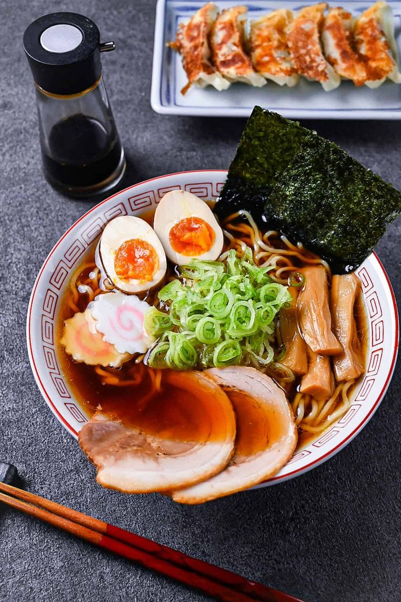

Ramen

Figure: Ramen
Ramen is a famous dish of Japanese culture, famous during the time of war
Ingredients
- Miso
- Doubanjiang
- Sesame seeds and Sesame oil
- Homemade or store-bought chicken broth
- White pepper powder
Steps
- Cook the noodles
- Add soup base
- Add other ingredients
- Serve